Varve
VarveDocumentationArchitecture decisionsPages in this section ↓
The docs site: a generator in eng/ on Markdig, Mermaid drawn at build time, no script
Status #
Accepted — filed unaccepted by #317, 2026-11-16 (ADR 0066), under #129's docs-site deliverable, its nine rulings accepted on #324 on 2026-11-17, at the maintainer's word, by his delegate (ADR 0239). Recording the maintainer's answers of 2026-11-16 on #129 to the plan's questions 1 to 5. Numbered 0247: 0244 to 0246 are taken on other branches.
Amends ADR 0224, point 1 (what the
register holds): a package from outside NuGet that a build tool fetches is a
BuildArchive entry in the register. The amendment is dated 2026-11-16 and
filed unaccepted.
Records decision set docs-site.
Context #
#15 and #129 make a docs site a 1.0 deliverable: published to GitHub Pages
from main, with Mermaid rendering. It carries the ADRs, the operator guide,
the learning track (#94), the varve: vocabulary and the problem types, has a
gate that fails on a broken internal link or anchor, and generates each
package's API reference from its public API baseline so it cannot drift.
docs/ held 661 Markdown files on 2026-11-16 and no generator. Every page
was written for GitHub's renderer, and every link between them was relative.
A check of those links found 1,567, two broken: one to a page that never
existed (docs/operator/limits.md, which #267 corrects) and one in accepted
ADR 0114, to a file name ADR 0095 never had. No page had a diagram yet.
Constraint 4 (every third-party package needs an ADR) and ADR 0224 (the locked restore and the dependency gate) apply to build tools as much as to shipped code. Three generators were candidates (#129):
| What enters the register | Reproducible | Mermaid without a third-party script | |
|---|---|---|---|
| DocFX | docfx and its closure: Roslyn, a JavaScript template engine, and a template bundling its own JavaScript, Mermaid included. Its API reference is built from compiled assemblies, not the baselines. |
Pinned by the restore, but the template is a large bundle nobody here reviews. | Only in the browser, from the template's script, unless the template is forked. |
A small generator in eng/ |
One package, Markdig: BSD-2-Clause, managed, no dependency on net10.0. |
Yes: a locked restore, sorted output, no clock. | At build time (point 3). |
| A static generator run only in CI (MkDocs, Hugo) | Nothing in Directory.Packages.props: a Python or Go toolchain outside the gate, which is what the gate exists to see. |
Only with hash-pinned requirements kept outside the gate. | In the browser by default. |
A BCL-only Markdown renderer would add no package, but would mean writing CommonMark, pipe tables, autolinks and GitHub's heading identifiers, for 661 files written against GitHub's renderer.
Decision #
-
The generator is
eng/site/, a console project on Markdig.- It is build tooling, not a Varve project: it imports
eng/Directory.Build.props, so it has no layer and no analyzer. It restores locked from its ownpackages.lock.json. - Markdown is read as CommonMark with the extensions the docs use: pipe tables, strikethrough, task lists, autolinks, YAML front matter, and GitHub's heading identifiers, so a link that works on GitHub works on the site, and the gate judges it as GitHub does.
Markdigis in the register withScope="eng/site/".
- It is build tooling, not a Varve project: it imports
-
What the site carries. Every Markdown file directly in
docs/operator/,docs/problems/,docs/adr/,docs/decisions/,docs/spec/,docs/rules/anddocs/formats/, each folder'sREADME.mdas its index, anddocs/vocabulary.mdanddocs/auth-providers.md. A decision set's front matter is shown as written, since it is the rulings. The learning track (#94) has one page, explicitly marked as a stub, until it is written.- A link to a page the site carries becomes a link to that page.
- A link to anything else in the repository,
src/ortestdata/or a page the site does not carry, becomes a GitHub link at the commit the site was built from. So a link to code never drifts from the text beside it.
-
Mermaid is drawn at build time, and the site ships no script.
Directory.Packages.propsholds oneBuildArchiveentry formermaid: the exact version, the URL of npm's archive of that version, npm's published SHA-512 of it, its licence (MIT) andScope="eng/site/". There is nonpm installand no dependency tree.- The generator fetches the archive, checks its SHA-512 before reading a
byte of it, and takes
package/dist/mermaid.min.jsalone. That file is Mermaid's self-contained bundle. Mermaid's 22 declared dependencies are compiled into it, and none is fetched. - It runs in the runner's Chrome through
Microsoft.Playwright, which ADR 0204 admits; its scope widens toeng/site/. The page is a blank one the generator serves itself, and every other request is refused. A request at all fails the build, so Mermaid must draw with none of its own. - Mermaid's
strictsecurity level, with HTML labels off, so text is SVG text and noforeignObjectis drawn. - Each diagram is its own SVG file, named by the digest of its source,
and shown with
<img>. An SVG loaded as an image runs no script and loads nothing, whatever it holds. Mermaid's SVG carries a<style>of its own, which a page policy with no'unsafe-inline'would block if the SVG were inline. - Each SVG is checked before it is written (the maintainer's answer 2):
no
script,foreignObject,iframe,embedorobject; no event handler; nohreforsrcbut to its own fragments; nourl(…)but to its own fragments; no@import; and no absolute URI except namespace names. Any finding fails the build.

-
The link gate.
dotnet run --project eng/site -- check, the jobsite-linksineng/ci.cs, reads every page the site carries:- every relative link names a file or directory of the repository;
- every anchor on a link to Markdown is a heading, or an HTML
idorname, of that file.
Exemptions are in
eng/site/link-exemptions.txt, one per line: the page, the link exactly as written, and the decision that allows it. An exemption that matches no broken link fails, so none outlives its reason. The first is ADR 0114's link to 0095. That ADR is accepted and not edited (ADR 0068); it gets a dated note naming the right file (the maintainer's answer 3). Its failure path is proven on fixtures intests/fixtures/site/. The build runs the same check first, and then checks what it wrote: no page holds a script, and every local link and anchor reaches a file of the built site. -
The API reference is generated from the baselines. Each package under
src/withPublicAPI.Shipped.txtorPublicAPI.Unshipped.txthas a page, its lines grouped by type: a type is a line with no member signature, and a member belongs to the longest type its signature starts with. The build already holds those files to the compiled surface (ADR 0035), so the reference cannot drift from what ships. Before 1.0 everyShippedfile is empty, and the reference says so: the surface shown is unshipped. -
The Content Security Policy is a meta element on every page:
default-src 'none'; style-src 'self'; img-src 'self'; base-uri 'none'; form-action 'none'- There is no script source at all, and nothing loads from another origin: one stylesheet, the diagrams, no web font.
- GitHub Pages sends no header Varve chooses. A meta policy cannot state
frame-ancestorsor a report endpoint, so neither is stated. <meta name="referrer" content="no-referrer">goes with it.
-
Publishing.
- The deployment.
.github/workflows/docs-site.ymlruns on pushes tomainand by dispatch. It builds the site, uploads it withactions/upload-pages-artifact, and deploys it withactions/deploy-pagesthrough the job's OIDC token. Only the deploy job haspages: writeandid-token: write, and no token is stored. - The environment. It is
github-pages, declared in.github/repo-standard.yamland restricted tomain. - Pull requests build the site in ci.yml's job
docs sitetwice, and the two builds must be byte-identical. They also check it, and deploy nothing. - What a build depends on: the repository, the commit it names, the archive and the browser. Each page's foot names the commit.
- The deployment.
-
The register holds build archives (amending ADR 0224 point 1). A
BuildArchiveentry names:- the archive and its exact version;
- an
httpsURL that names that version; - the archive's SHA-512 integrity;
- its licence, checked against the build and test allow-list;
- the scope of the tools that fetch it;
- the ADR that admits it.
eng/dependency-register.cschecks each of these, with a fixture per failure. The fetcher reads the URL and the digest from the entry, so the register is the one place the archive is pinned.
Alternatives considered #
- DocFX. Rejected: its template's script, its closure, and an API reference built from assemblies rather than from the baselines the API freeze gates.
- MkDocs or Hugo in CI only. Rejected: a toolchain outside the dependency gate, and client-side Mermaid by default.
- A BCL-only renderer. Rejected for now: the cost of a faithful GFM renderer is far above one reviewed, dependency-free package.
- Mermaid's script on the pages. Rejected: the site would need a script source, for one library the size of all the rest of the site.
- Inline SVG. Rejected: Mermaid's own
<style>needs'unsafe-inline'for styles, and inline SVG is part of the page's own document. - Hand-kept SVG. Rejected: a drawing nobody regenerates drifts from its source.
Consequences #
- A diagram in any page is drawn the next time the site builds. Its source stays in the Markdown, where GitHub draws it too.
- The site's own runtime is HTML and CSS only. There is no search. Search would need a script, and is a later decision if it is wanted.
- A heading renamed breaks every link to its anchor, and
site-linkssays where. - Mermaid moves by changing one register line (version, URL, digest) with
this ADR's set;
eng/dependency-register.cschecks the line's shape. - Diagrams are drawn by the runner's Chrome, so their text metrics are that browser's fonts. A diagram that changes with the runner's Chrome changes the site and nothing else.
Checks #
site-linksineng/ci.cs, and its fixtures (site-links-fixtures).registerandregister-fixturesineng/ci.csfor theBuildArchiveentry.- ci.yml's
docs site: the build twice, compared byte for byte, the SVG checks and the built site's own check. docs-site.ymlonmain.